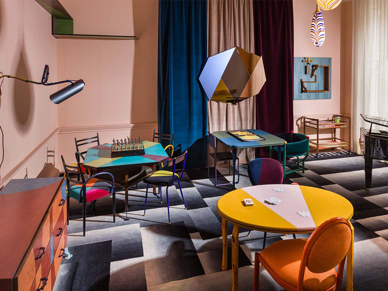
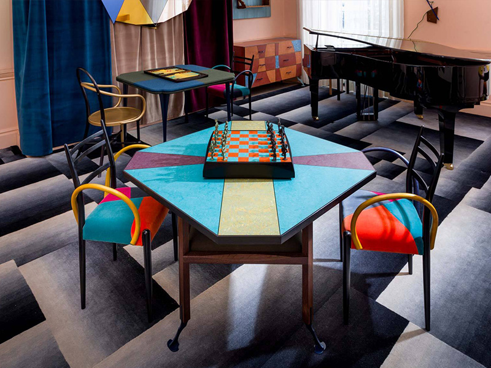
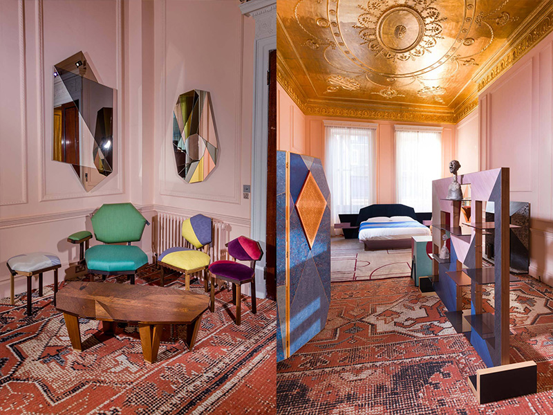
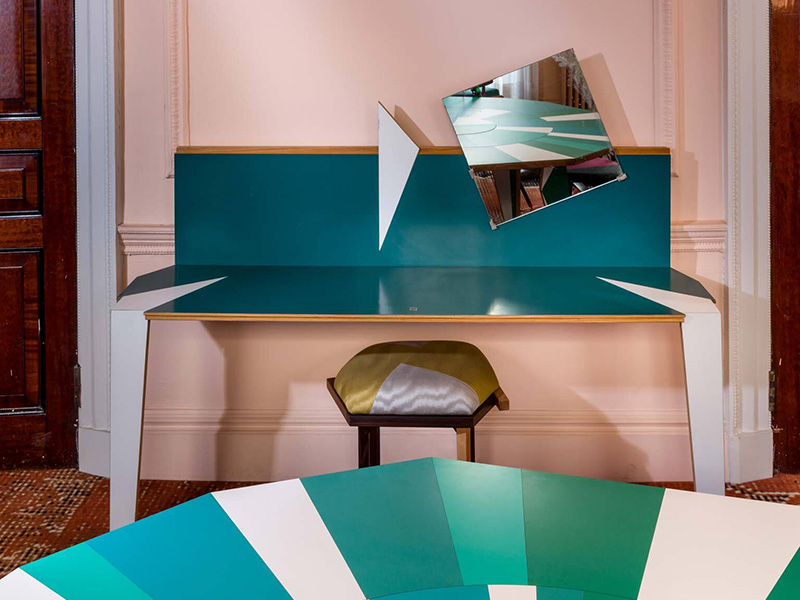

'Before, After & Beyond'
Exhibition Setup — London Frieze Week 2024
I assisted Martino Gamper OBE and Angus Mills across the full month-long run of 'Before, After & Beyond' at London Frieze Week 2024. My work covered the setup and pack-down of the exhibition, building and placing furniture within the space, as well as photo assisting Angus Mills across each of the shoot days.
antonkerngallery.com ↗


